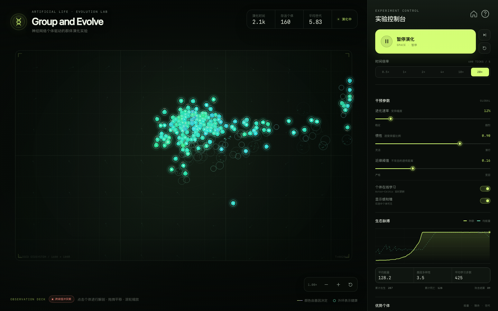

01
ONE ORIGIN
单一起点
一个带有自养倾向的生产者型始祖细胞。没有初始族群，也没有预设阵营；生态从一个个体开始扩张。
OPEN-ENDED ARTIFICIAL LIFE / 001
Group and Evolve 是一个从单一生产者细胞出发的人工生命实验。六维基因、微型神经网络、在线学习与两两遗传距离，共同决定每个个体如何移动、繁殖、靠近或攻击。
无需安装 · 浏览器内实时运行 · 最高 20× 时间倍率
CORE MECHANISM / 02
实验不告诉生物谁是自己人。颜色、关系与冲突，都必须从六个性状基因和每个时间步的交互中长出来。
ONE ORIGIN
一个带有自养倾向的生产者型始祖细胞。没有初始族群，也没有预设阵营；生态从一个个体开始扩张。
GENOTYPE
攻击伤害、攻击收益、质量、自然增能、繁殖阈值与成功率。每一代都在继承中发生小幅变异。
PHENOTYPE COLOR
颜色是六维基因的连续函数。相似基因呈现相近色相，不存在按族群分配的颜色，也不存在离散换色。
PAIRWISE DISTANCE
每对个体独立计算遗传距离。距离不超过阈值的一对互不攻击；越过阈值，才获得攻击资格。
NEURAL POLICY
前方邻居、自身状态与遗传亲和信号进入 60 → 24 → 3 网络，输出推进力与是否尝试攻击。
DUAL LEARNING
生命内由 Actor-Critic 实时更新突触；世代间继承网络权重和基因，再由变异与选择继续塑造。
EVOLUTION LOOP / 03
没有中心导演。每个个体只看见眼前的一小块世界，按照自己的网络和基因行动；整个生态从这些局部决定中浮现。
能量达到阈值后，个体尝试分裂。生产者始祖以较低的繁殖成功率开始扩张。
子代继承父代基因与当前神经网络权重，再按全局进化速率产生连续变异。
力与攻击意图由网络实时采样；掠食收益、受伤、繁殖和死亡反过来更新策略。
两两遗传距离决定攻击是否被允许，生命值与寿命决定谁留下。规则始终相同，结果从不重复。
OBSERVATION WINDOW / 04
运行、暂停、单步推进，或在 0.5× 到 20× 之间改变时间。点开任意个体，查看它的六维基因、神经网络激活和当前视野里的近缘与远缘关系。

进入实验 ↗A SMALL RULE, A LARGE WORLD
没有族群。没有预设阵营。
只有基因，和每一对基因之间的距离。
颜色由基因计算，关系按个体对实时判定。每个局部决定的叠加，最终成为一场没有剧本的演化。
FIELD NOTES / 05
不。颜色是六维基因的连续表型，基因越接近颜色越接近；颜色从不参与攻击判定。两名颜色不同的个体也可能仍处于近缘阈值之内。
每次攻击都会重新比较攻击者和候选目标的遗传距离。若距离不超过近缘阈值，候选目标会被直接排除；超过阈值才解锁攻击资格，随后仍由该个体的神经网络决定是否真的出手。
它们是两个时间尺度。个体在生命中通过 Actor-Critic 在线更新权重；子代复制父代当前权重后，再发生遗传变异。后天学习与先天遗传同时参与下一轮选择。
高倍率是目标时间倍率。个体数量较多时，实时仿真和在线学习会受设备性能限制；界面会尽可能推进时间。可以降低倍率、暂停在线学习或重新播种来获得更流畅的观察。
BEGIN WITH ONE CELL